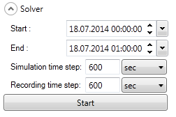
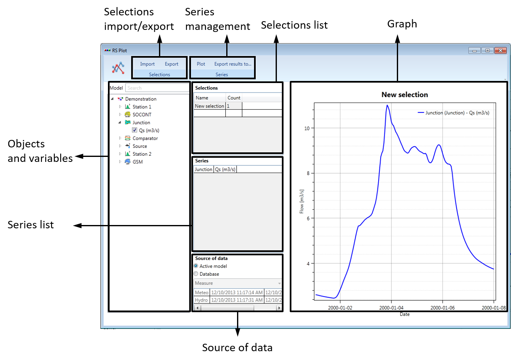

5.1 Run a model
Before solving a model, its validity has to be verified.
- Click on the Validation button. A Pre-Simulation report is generated (right-frame).
In case of Fatal error(s): Correct your model consequently. 1
In case of Warning(s): Proceed to adequate modifications if required.
In case of Note(s): Consider the message(s) and go ahead.
- In the Solver window, define the simulation period, simulation time step and recording time step (Figure 5.1).

The time interval for the simulation time step and recording time step can be modified accordingly to Table 5.1.
| Simulation time step | Recording time step |
|---|---|
|
|
Click on Start. At the end of the computation, a Post-Simulation report (right frame) provides a summary of the simulation with potential warning(s).
Visualize the obtained results by selecting each object in the Interface and using the Graphs tool in the Object frame (Figure 1). Select the variable(s) of interest in the list (use Ctrl to select more than one series).
5.2 Results visualization with the Selection and Plots
A combination of results can be visualized in the Selection and Plots module.
- Click on Selection and plots in the Toolbox frame (Figure 1). A new tab is opened.
In the Objects and variables frame (Figure 5.2), all the variables are listed by objects.
Check in the Objects and variables frame the variable(s) to draw.2
Click on Plot to plot the listed series.3
Give a name to the active selection in the Selections list.
Export the selection using Selections frame \(\rightarrow\) Export.4
Import a selection using Selections frame \(\rightarrow\) Import.
A second selection appears in the Selections list. Different selections can be defined and saved for the exploitation and analysis of the results.

5.3 Export / Import of results to a database
Results of a simulation can be saved to the database as a dataset of time series.
Select Export in the Database frame (Figure 1) in the RS MINERVE main window.
Define the name of the dataset and choose between:
Add the dataset to an existing Group.
Create a new Group.
Export with OK. 5
You can now visualize your results in the database (cf. Section 3). Once exported, results can be imported into the model. Importing a dataset of series replaces the current time series (results of a simulation) of all concerned objects.
Select Import in the Database frame.
Select the Group and the Dataset of time series to import and click Ok.
Exported results can also be visualized in the Selection and Plots module.
Open Selection and Plots module (Module frame \(\rightarrow\) Selection and plots).
In the Source of data, check the Database source (Figure 5.2), then select in the combo the Group containing the dataset of time series.
Select the dataset of time series to be drawn.
Click on Plot in the Series frame.
During the Validation process, the model is verified. In particular, a Fatal error is generated for each missing required object’s input (absence of interconnection from upstream).↩︎
Variables of two different units can be drawn simultaneously (second axis).↩︎
Use the mouse to visualize data values (press left button), move (press right button), zoom (press scroll-wheel) or fit to view (double-click on scroll-wheel). Zoom and fit to view can be also realised onto the axes.↩︎
Selections are saved in a text file with the *.chk format.↩︎
By activating Only selected series, only the series corresponding to the last active Selection in the Selection and Plots are exported.↩︎